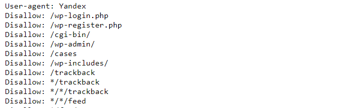
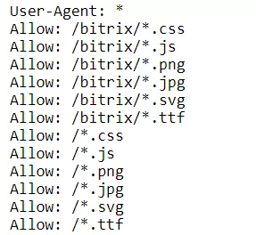
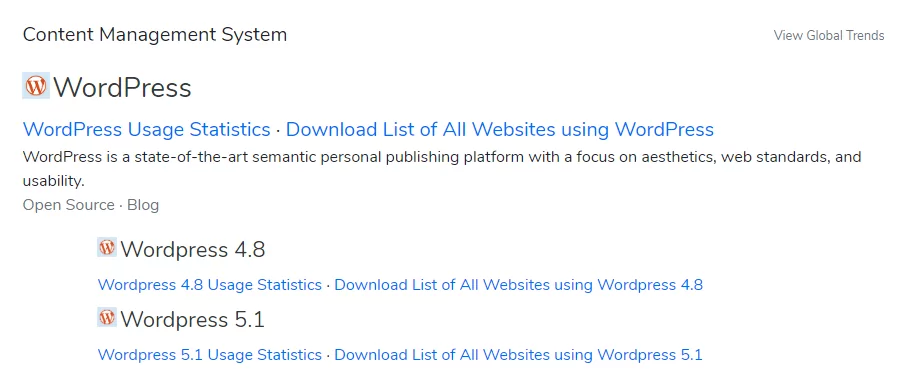
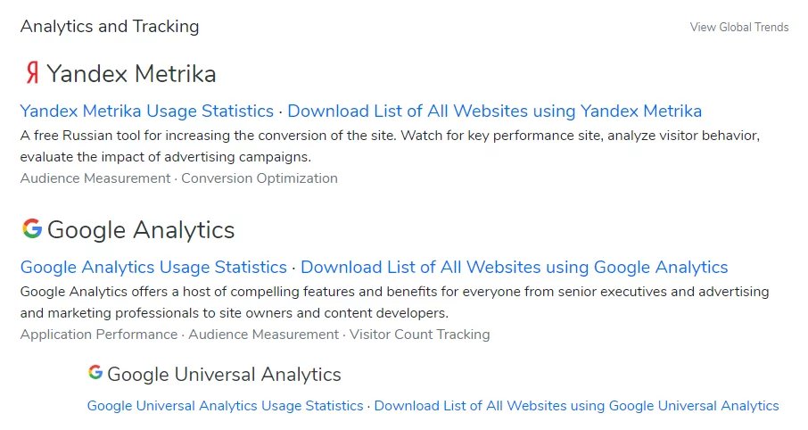
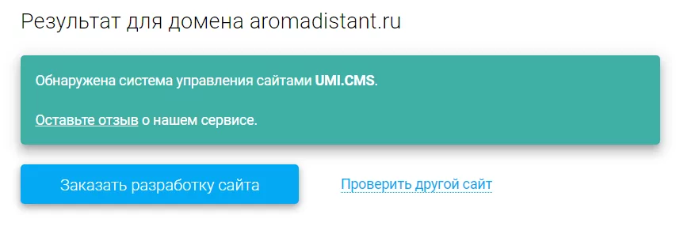

Благодарим Вас за посещение нашего сайта!!!
Мы очень благодарны вам за то, что вы посетили наш сайт. Надеемся, что ознакомительный материал
был для вас интересен и полезен.
Копаемся в HTML-коде.
Упоминания движка можно найти в метатеге generator, названиях плагинов, путях к важным файлам (внутри тега head), иногда в футере (подвале) сайта. Чтобы открыть исходный код, нужно кликнуть правой кнопкой мыши в любом месте страницы и нажать на «Просмотреть код» или использовать горячие клавиши Ctrl + U. Далее искать удобно уже с помощью Ctrl + F.
Ищем адрес админки
Определить движок можно также по адресу, ведущему к административной панели сайта (в народе — админка). У каждой CMS он свой. Чтобы найти админку сайта, нужно просто попробовать разные варианты.
| Система управления сайтом | Путь к административной панели — site.ru… |
|---|---|
| 1C-Bitrix | /bitrix/admin |
| WordPress | /wp-admin |
| OpenCart | /admin |
| Drupal | /user |
| Joomla | /administrator |
| ModX | /manager |
Изучаем файл robots.txt
В robots.txt прописывают инструкции для поисковых роботов, где фигурируют служебные страницы и директории. По ним, как правило, тоже можно определить движок. Файл находится по адресу вида site.ru/robots.txt.
Фрагмент robots.txt на WordPress-сайте.
Пример файла с сайта на 1C-Bitrix.
2. Вооружаемся специальными сервисами
Built With
Built With — простой бесплатный инструмент, не требующий регистрации. Он не только определяет CMS, но и даёт развёрнутую информацию о ресурсе: список плагинов, счётчиков, пикселей, виджетов и т.д. Кроме веб-версии, есть расширение для Chrome и Firefox.
Вот данные по движку.
А вот сведения о счётчиках веб-аналитики в соответствующем разделе.
iTrack
iTrack — уже российская разработка, поэтому хорошо определяет и CMS, и отечественные конструкторы (Nethouse, Tilda, UMI и др.). Инструмент бесплатный и не требует регистрации.
